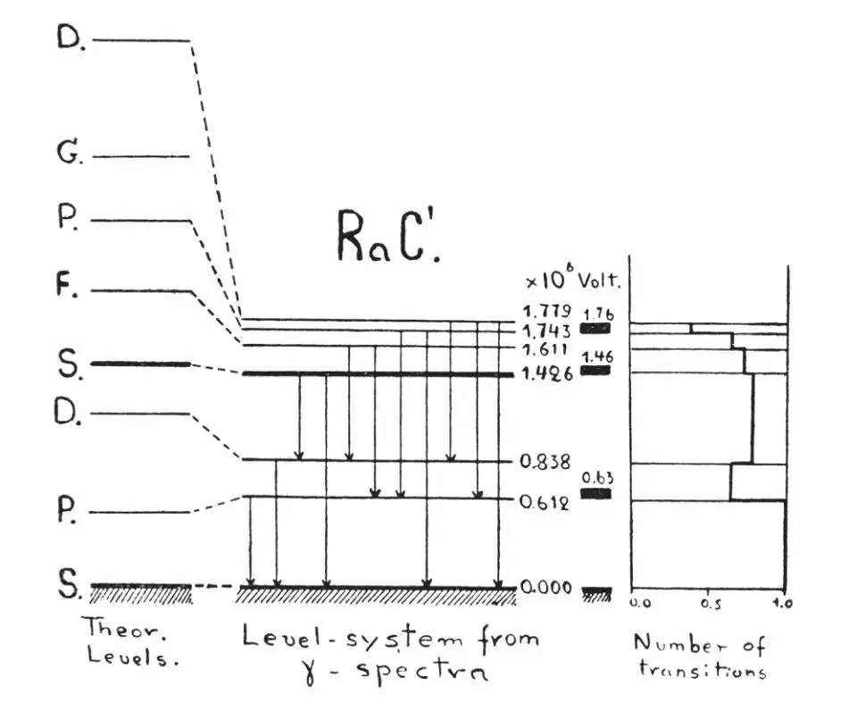
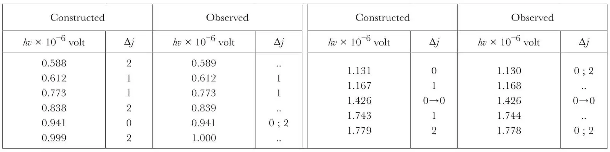

中文
中文G. Gamow
Editor’s Note
Although physicists still lacked any clear understanding of nuclear structure—the possibility that electrons inhabited the nucleus was still widely considered, for example—quantum theory was proving useful for interpreting nuclear spectroscopy. As George Gamow here points out, one could gainfully consider nuclear constituents to be bound by unknown forces inside a square-profiled well with infinitely high sides: a model tractable to quantum theory, which could predict the energies of states of different angular momentum. Gamow shows that spectroscopic data from an isotope called radium C' revealed transitions close to 11 of the 21 predicted by the theory. Further studies might indicate how the square-well model should be altered to make the theory more accurate. 中文
IT is a plausible hypothesis that the forces acting on a particle inside the nucleus are comparatively weak in the internal region and increase rapidly to the boundary of the nucleus, the potential distribution being represented by a hole with more or less flat bottom and rather steep walls1. If we approximate this model by a rectangular hole with infinitely high walls, the energy levels of a moving particle will be determined by the roots of Bessel functions and can be easily calculated. For the real model, however, this theoretical level system will be deformed owing to the fact that the walls are neither quite steep nor infinitely high, producing compression of the upper part of the level system. 中文
The best nucleus for testing this hypothesis is that of radium C', for which a lot of experimental evidence is available. For this nucleus we have the measurements by Rutherford2 of long range α-particles (nine groups) giving us approximate positions of nuclear levels. The investigations of Ellis3 give for a number of γ-lines (nine lines) their absolute intensities and, what is most important, the values of internal conversion coefficients enabling us, as has been shown by Taylor and Mott4, to tell the dipole transitions from quadrupole transitions. 中文
These data are sufficient to construct the level system of the radium C' nucleus, the main part of which is represented in Fig. 1, together with the theoretical one. 中文

Fig. 1 中文
We see immediately that not every level corresponds to a long range α-group; this is, however, to be expected, as the probability of α-disintegration from a level with large j is comparatively small, due to the additional barrier of centrifugal forces (for equal energies the probability for an α-particle escaping from P-, D-, F-, G-levels will be respectively 1.3, 4, 16 and 105 times less than for the S-level). The observed transitions are given in the accompanying table. 中文

From twenty-one mathematically possible transitions, eleven are actually found and, as can be seen from the table, have appropriate energies and obey the exclusion principle. From the remaining ten lines, two are not to be expected corresponding to F → S-transitions, four fall in a spectral region not yet investigated and four are not observed, possibly due to comparatively small intensity. It is also of interest to construct an excitation diagram, building up the sums of the intensities for all lines crossing a given level interval. From this diagram we see that there must be a γ-line 0.226 × 106 volt with absolute intensity about 0.2 which at present is not known. 中文
The similarity of theoretical and real level systems proves the correctness of our picture of the potential inside the nucleus, and the deviations between these systems must permit us to calculate the real potential distribution. 中文
(131, 433; 1933)
G. Gamow: Research Institute of Physics, University, Leningrad, Jan. 30.
References:
1. Gamow, Proc. Roy. Soc., A, 126, 632 (1930).
2. Rutherford, Proc. Roy. Soc., A, 131, 684 (1931).
3. Ellis, Proc. Roy. Soc., A, 129, 180 (1930).
4. Taylor and Mott, Proc. Roy. Soc., A, 138, 665 (1932).